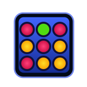

PLAYGRID 3.0 · SHARED COMPONENTS
One small decision at a time.
Desktop · 1440px · Dialog/state sheet; sample data is illustrative
1. Create Party
Create a Party
No game to choose yet. Get your people together first.
◉
Private
Only people with your invite can join.
○
Public
Let others find your party in Rooms.
Allow spectators
Next: inviteable lobby with “Choose a Game”. No name, game or advanced fields required.
2. Searchable game picker
Choose a Game
For your party · 4 players, 2 spectators
All · 21DrawingStrategyFits our party
Draw & Guess2–12 · Drawing
✓
Four in a Row2 players · Strategy
At capacityState specimen · explain eligibility here
Keyboard focusState specimen · visible focus ring
3. Game settings
Game Settings
Draw & Guess · sensible defaults, fewer decisions
DifficultyRound timeRoundsAdvanced settings⌄
All supported timers, custom words, hints and seat limits live here.
4. Results / next game
Good game, everyone.
You’re still in The Friday Crew. What’s next?
Nova
1200 pts1st place
Alex
950 pts2nd place
Host view shown. Participants get Ready for Rematch / Vote for Next Game / Back to Lobby. Only the host launches or confirms a game.